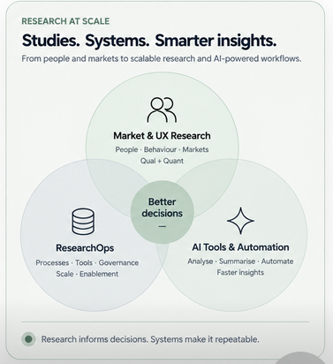

Research for product decisions — and the systems needed to support it.
My work covers UX research, market research and ResearchOps. This includes strategic studies, continuous measurement, research infrastructure and the practical use of AI in research workflows.

Selected Work
Four examples of my work across product research, strategy and research operations.
Building a scalable Research Practice
An operating model for recurring research, with dedicated capacity, easier participant access and a consolidated tool stack.
Reframing the Digital Purchase Journey
A product question about one page led to a cross-market study of the full purchase journey and its touchpoints.
Developing an AI-supported Research Workflow
A practical workflow that uses AI for selected tasks while researchers remain responsible for methodology, interpretation and quality.
PDXS — continuous health checks for digital touchpoints
A repeatable measurement programme with a standardised core and flexible modules for current product questions.
Selected project details and visuals are simplified or reconstructed to protect confidential information.
How I work
For me, research is not limited to individual studies. It also involves clarifying the question, supporting decisions and creating processes that can be used across projects.
Streamline
I use efficient processes and automation to reduce repetitive work and unnecessary complexity.
Explore
I assess new methods early and test them in practice, including AI-supported interviews and analysis.
Collaborate
I work closely with product teams and international partners, with clear responsibilities and shared ownership.

I want research to be useful in product development.
My background covers market research, UX research and product development. I work with both qualitative and quantitative methods.
I am interested in what people actually do, not only in what they say they will do, and in how this understanding can inform product decisions.
I follow developments in research methods and test promising approaches in practice. I continue using them when they prove useful; otherwise, I do not.
Research quality matters to me, but the appropriate level of rigour depends on the decision at hand. A team may sometimes need a quick, directional answer; in other cases, robust data and methodological precision are essential. I design the research accordingly.
Much of my current work concerns the conditions around research: easier access, suitable infrastructure and practical ways to leave researchers more time for interpretation.
Would you like to discuss the work?
The case studies provide an overview. I am happy to discuss the decisions, changes of direction and lessons behind them in more detail.